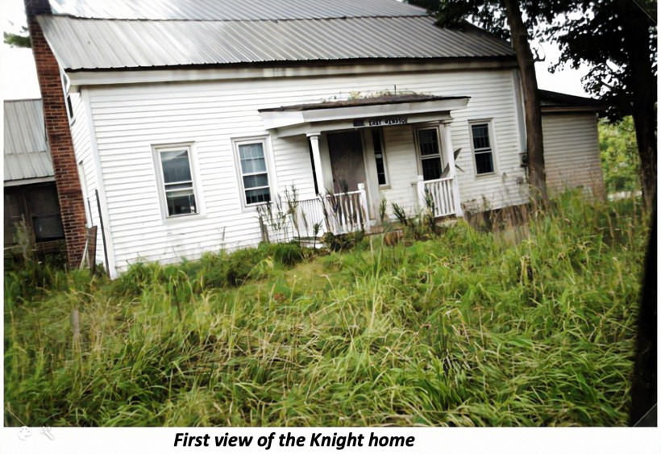
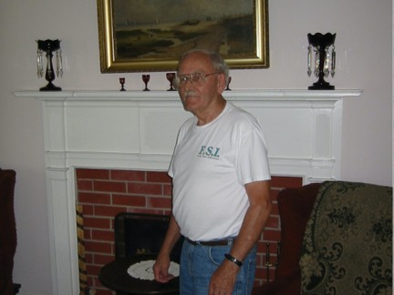
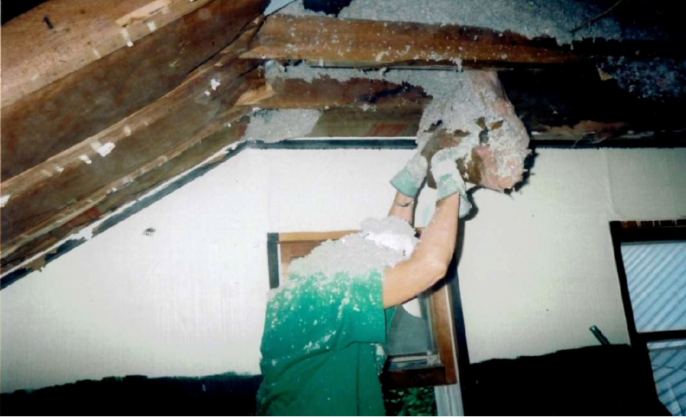
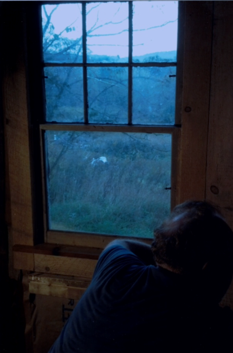
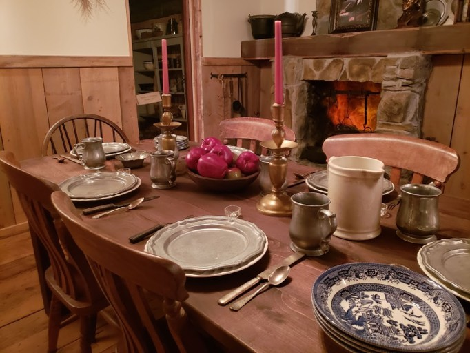
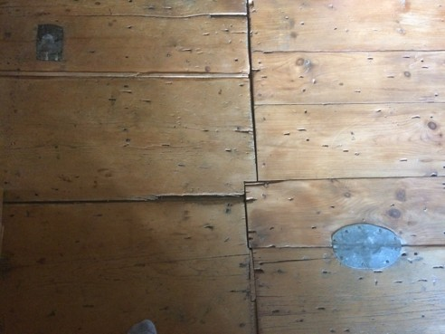
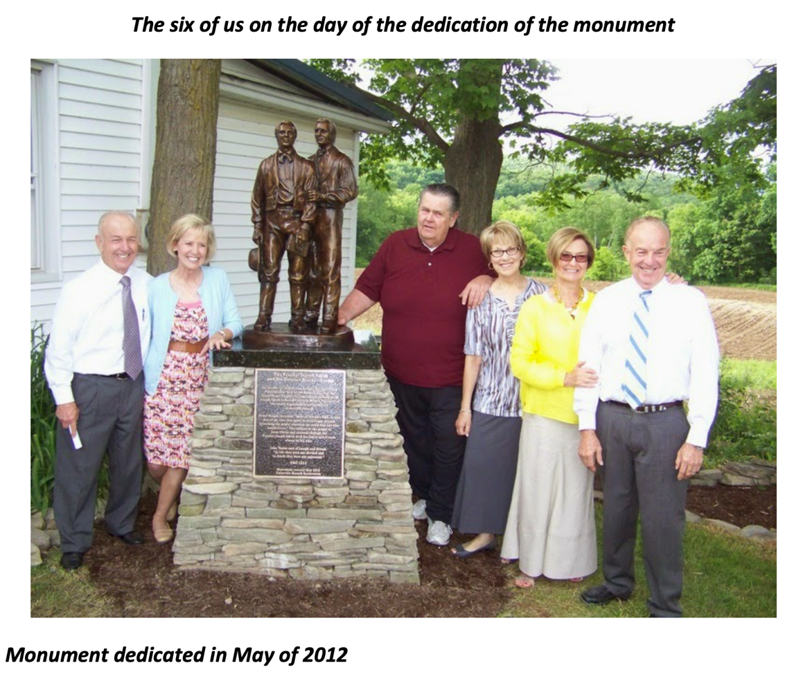

The Joseph Knight Sr. Farm and the Knight Family

Joseph Knight Sr. was a prosperous farmer and miller who purchased farmland along the Susquehanna River in what is now Nineveh, New York, around 1810. In 1825 he hired a young Joseph Smith as a farmhand. Knight recalled that Smith was “the best hand he ever hired.” As their friendship deepened, Smith confided in Knight about the angelic visitations he had received. Knight believed him — making the Knights among the very earliest believers, even before Oliver Cowdery, Martin Harris, or David Whitmer. For this reason, historians have called the Knight family “the Second Family of the Restoration.”
Knight provided critical material support at pivotal moments: lending his horse and wagon, and delivering food, paper, and supplies during the translation of the Book of Mormon. On the night of September 22, 1827, Knight and Josiah Stowell waited at the Smith home while Joseph went to the Hill Cumorah to receive the golden plates. The Lord gave a revelation for Joseph Knight Sr., now recorded as Doctrine and Covenants Section 12.
The Knight farm was the site of the first miracle performed in the Church after its organization — when Joseph Smith cast an evil spirit from Newel Knight in April 1830 — and of the Colesville baptisms in June 1830, when thirteen people were baptized despite mob opposition. These converts formed the Colesville Branch, widely regarded as the first branch of the Church, with roughly sixty to eighty members drawn from the Knight, Peck, DeMille, Stringham, and other families.
The Colesville Branch was remarkable for its unity. When the Saints gathered to Ohio in 1831, the entire branch migrated together. They pressed on to Jackson County, Missouri, becoming the first branch to settle the land dedicated as Zion. Joseph Knight Sr. remained faithful to the end, dying in 1847 at Winter Quarters.
The farmhouse, dating to approximately 1815, was privately purchased and restored beginning in 2004 by the Mecham, Glenn, and Painter families. After thirteen years of work, it opened to visitors in 2016. It is not owned or operated by The Church of Jesus Christ of Latter-day Saints.
The Josiah Stowell Home

Josiah Stowell was a respected farmer and sawmill owner in what is now Afton, New York (formerly known as South Bainbridge). In October 1825 he hired Joseph Smith for a project near Harmony, Pennsylvania. Though the venture was short-lived, it proved providential: it brought Joseph to the area where he met Emma Hale, and it forged a lasting bond between Stowell and Smith.
Stowell became one of Joseph Smith’s earliest and most steadfast supporters. He testified in Joseph’s defense in court in 1826, declaring he “positively know it to be true.” He was present with Joseph Knight Sr. on the night Joseph received the golden plates in 1827, and he assisted the young couple after their marriage. Stowell was among the early converts baptized in the Colesville area and remained faithful until his death in May 1844.
The Stowell home at 323 State Highway 7 in Afton has been preserved and restored alongside the Knight farm. Like the Knight property, it is privately maintained and available for guided tours.
The Restoration of the Homes

Rediscovering the Knight Home
For generations, the identity of the old farmhouse on East Windsor Road in Nineveh, New York was preserved not in academic records but in the living memory of local families. When Rafael Mecham asked Charlie Decker, the Afton town historian, what made him certain this was the Joseph Knight Sr. farmhouse, Decker’s answer was immediate and emphatic:

“I’ve always known it, my father always knew it, my grandfather always knew it and my great-grandfather and my great-great grandfather, who just happened to be building his home, the home for his posterity, including me — where we were all born and raised. He knew it because he was a friend of Joseph Knight Sr. It was the Knight house then, it’s the Knight house now, it’s always been the Knight house.” — Charlie Decker, Afton Town Historian
That certainty, passed down through five generations, set everything in motion. Rafael Mecham, along with his sister-in-law Pat Glenn and their families, became convinced that this property — neglected, overgrown, and filled with years of accumulated trash — deserved to be saved.
Purchased for Taxes on the Steps
The Knight property had fallen into severe disrepair after many years of neglect by its owners. The founding families were able to purchase it at a tax sale, literally on the courthouse steps. After a one-year waiting period required by law, they took possession and the real work began.
What they found was daunting. Twelve to thirteen dumpster loads of trash were hauled from the home and property — debris dumped on-site by previous owners over many years of neglect. The house itself needed everything: the foundation was crumbling, the electrical system was dangerous, and the interior was gutted down to the posts and beams.
The Fifteen-Year Labor of Love

The foundation was in critical condition and required immediate stabilization. This was painstaking, unglamorous work — shoring up stone and mortar that had been settling for two centuries. Foundation repair remains an ongoing effort even today.
Stan Ferrin, a skilled electrician, donated his time alongside a helper to tackle what seemed like impossible electrical problems throughout the home. A new electrical panel was installed in the basement, one of many additions needed to make the house safe and functional. Stan later described the experience as deeply spiritual — he felt guided by the Spirit as he worked, and the sacred experiences he had in the home changed his life for the better at a time when he needed it most.
The Miracle of the Window

When the interior walls were stripped back during renovation, a remarkable discovery was made: an original double-sash window, hidden for decades behind sheetrock and vinyl siding. Several of the glass panes had the distinctive sag of hand-blown glass over two hundred years old.
The window frame was badly deteriorated and had to be removed for repair. The craftsman who took it out found a perfectly rectangular window. But after making repairs and attempting to reinstall it, the frame jammed. The more he worked it, the worse it became, until it looked more like a trapezoid than a rectangle — out of square, out of plumb, out of balance. He laid it on the floor, where it teetered on two opposing corners.
He turned to reach for a chisel from the workbench behind him. While his back was turned, he heard a noise. Since he was alone in the house, this startled him. He turned back to find a perfectly rectangular window lying flat on the floor, with square corners. In that moment, he later said, he was overcome with the knowledge that someone who cared was watching over the entire restoration.
Furnishing the Home

The antiques throughout the home are not replicas. Every piece is authentic to the 1800–1830 era, sourced from antique stores in nearby hamlets and villages. The bible on the kitchen table is an original 1828 Cooperstown edition — the kind that would have been present in most Christian homes in the area. Four matching chairs were donated by descendants of Orson Hyde and his wife. All other antiques were purchased to furnish the home as faithfully as possible.
Original Details Preserved

Eighty percent of the floors in the original part of the home are the original floorboards. Visitors today walk on the same floors as the Colesville Saints, the Knight family, Joseph and Emma Smith, Hyrum Smith, and all who gathered in this home nearly two hundred years ago.
The ceiling in the front two rooms still bears the white “buttermilk” paint that Polly Knight had applied to brighten the rooms. Great effort was made during demolition to remove it, but the paint proved impervious to all attempts. The restoration team decided to leave it as a testament to Polly Knight’s legacy.
Near what was once the back porch, the top floorboard is worn completely through from generations of people wiping their boots before entering — the Prophet Joseph and Emma, Hyrum, Sidney Rigdon, Joseph and Lucy Mack Smith, Oliver Cowdery, and the Knight family all walked on this spot.
The original front door was found hanging in a doorway elsewhere in the home. Careful examination of hinge mortises and lock-and-latch marks confirmed it belonged at the front entrance. When it was rehung, the alignment and fit matched perfectly.
The Stowell Home Restoration
A five-minute drive north from the Knight Farm, across the Nineveh bridge and up Highway 7, stands the Josiah Stowell mansion in Afton. The Stowell family had deep roots in the area. Josiah was a “Vermont Sufferer” — his family had purchased land from New York State, only to have the same land sold by Vermont to others. When the federal government ruled in Vermont’s favor, New York compensated the displaced buyers with equivalent land in the Susquehanna River valley. Josiah was awarded 840 acres, and at one point held well over a thousand.
While the Knights were farmers and millers with carding machines, the Stowells operated a sawmill, grain mills, and bought and sold land extensively. The remains of the Stowell sawmill — the millrace and some supporting rock structures — can still be found along a stream about 200 yards northwest of the home.
It was in the parlor of the Stowell home, on a quiet weekend in mid-January 1827, that Joseph Smith asked Emma Hale to marry him — and she finally accepted. The Stowell young adults accompanied Joseph and Emma by sleigh to the home of Squire Tarbell, where they were married on January 18, 1827. The fireplace mantel from the Tarbell home — the very mantel before which Joseph and Emma were married — was saved years ago by Charlie Decker’s father or grandfather before the Tarbell home was demolished in the 1940s. It was later purchased by the Colesville Restoration families and installed in the Stowell home parlor, where visitors can see it today.
The Founders

The restoration of both properties was the work of four families: the Painters, the Smiths, the Glenns, and the Mechams. Without the financial help of Charlie Lee Clayton and many other donors, Colesville Restoration would never have completed its original goals.
Missionaries Rich and Cindy Morrey and Robert and his wife Whetstone served at the site and contributed significantly to the work. Robert Whetstone, who recently passed away, did a tremendous amount of work on the restoration over many years.
Today the properties are maintained by Colesville Restoration, Inc., a 501(c)(3) nonprofit, and staffed by volunteer docents during the tour season from May through October. The homes are not owned or operated by The Church of Jesus Christ of Latter-day Saints — they are preserved entirely through private donations and volunteer labor.